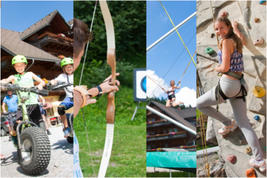

Info
.png)


Über uns
Sucht Ihr einen Adrenalinkick einer anderen Art - unberührte Natur, atemberaubende Aussichten, herzensgute Menschen oder einfach nur eine rundum gute Zeit, um einfach einmal loszulassen und den Alltagsstress zu vergessen? Dann ist eure Suche zu Ende, denn Ihr habt den richtigen Ort gefunden!
Das familiengeführte Moasterhaus ist ein traditioneller österreichischer Gasthof. Hier erlebt Ihr die urige Atomsphäre, für die unsere Region so bekannt ist. Von köstlichen hausgemachten Schmankerln, unglaublichen Ausblicken auf die wunderschöne steirische Natur bis hin zu Abenteuer in unserem Trial Park und Freizeitaktivitäten wie Bogenschießen, Bungee-Trampolinspringen, Klettern und das berühmte Risenroller fahren könnt Ihr alles bei uns im Moasterhaus finden und genießen.
Zum Abschluss Ihres Familienurlaubs empfehlen wir den nächtlichen Fackelspaziergang mit einem gemütlichen Lagerfeuer. Im Winter könnt Ihr unsere 40 ha große Pistenfläche und insgesamt 12 km Abfahrten nutzen, um den perfekten Wintersportausflug zu erleben. Falls Ihr eine abenteuerliche Auszeit in den österreichischen Alpen für die ganze Familie sucht, dann ist das Moasterhaus der richtige Ort für euch. Wir freuen uns schon jetzt auf euch!